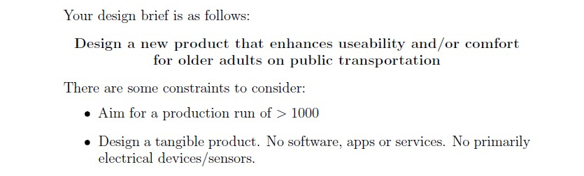
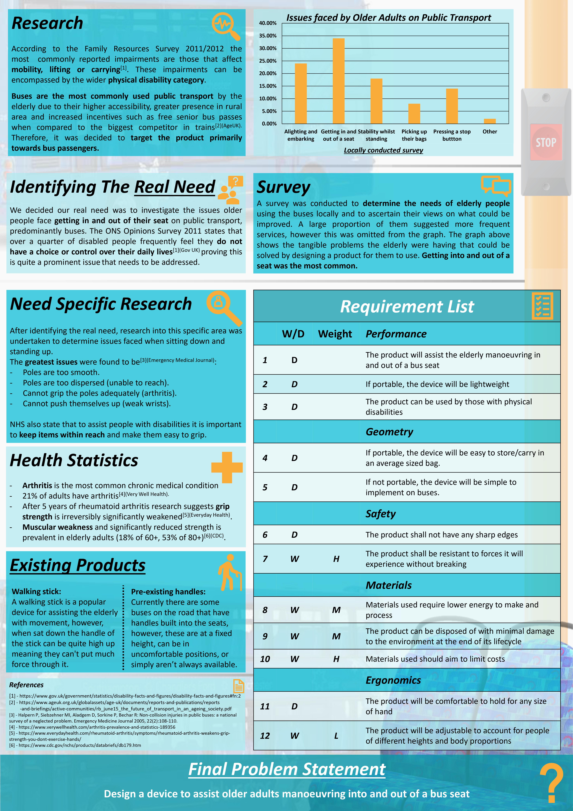
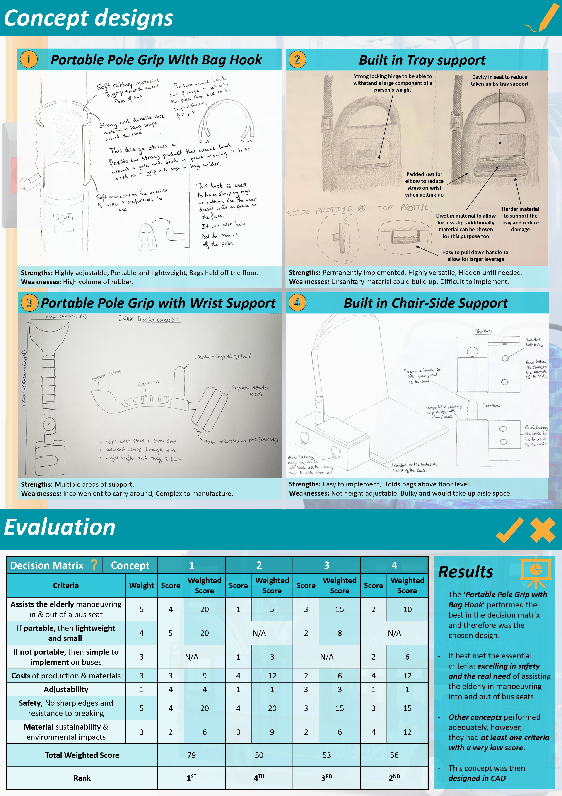
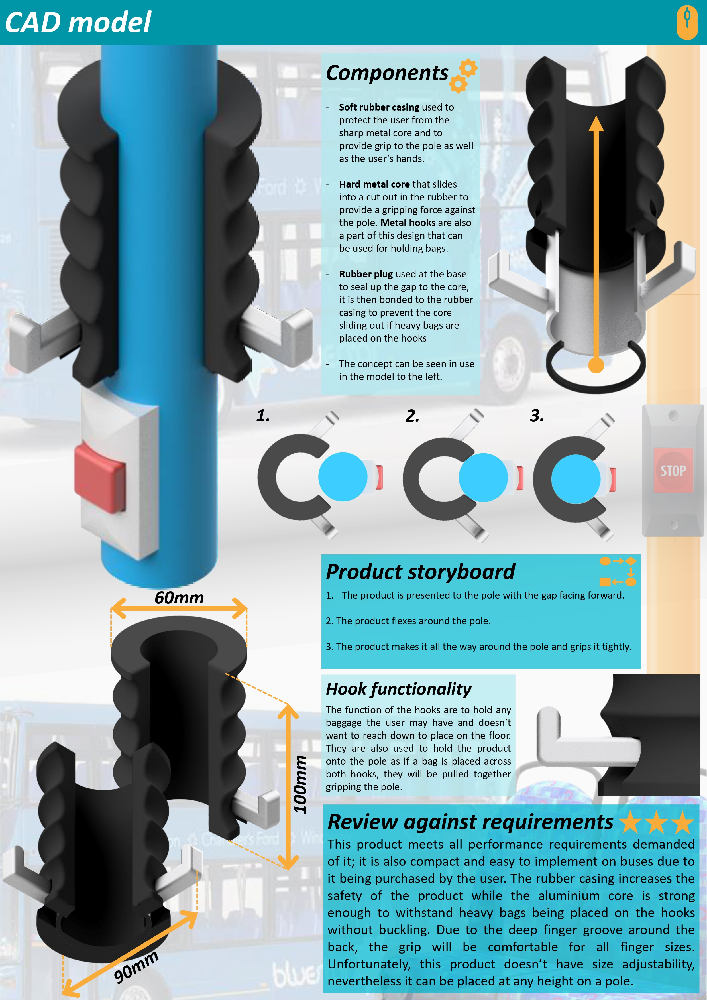
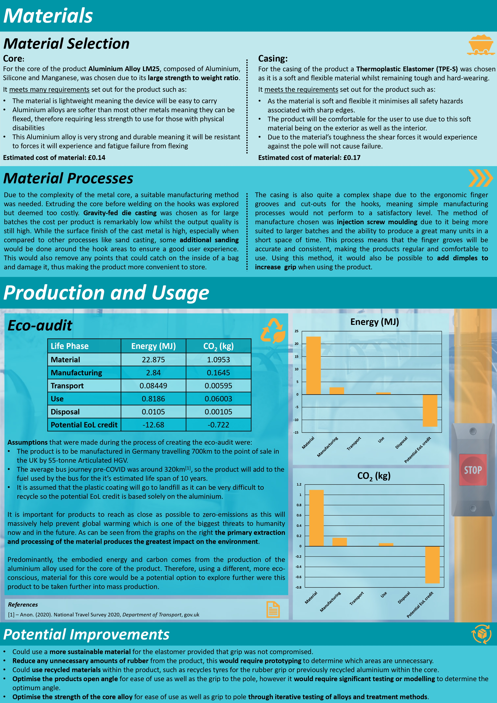

Product Design
The Product Design project I undertook during my second year of university was very valuable and taught me many skills in the concept generation field. For this project I was part of a group of 4 and we were tasked with creating a product that assisted the elderly while using public transport.
This required us to explore the many issues public transport users face, especially those older users. By doing this we were able to develop a problem statement relating to elderly users' experience on a bus.
After creating a problem statement we split off to create a range of ideas that we then ranked and decided upon a route the design should follow.
The design passed through a series of iterations before ending up at the final design shown in the poster below. I was tasked with the design of this poster and it taught me a lot about presenting a design and what it is important to show at the forefront of the view
As with all designs it is important to consider material and environmental costs when finalising a concept. We performed life cycle assessments on the embodied carbon and embodied energy to identify the concepts downfalls and came up with a list of potential improvements that could be made to the product if more time were to be allocated to the project.
